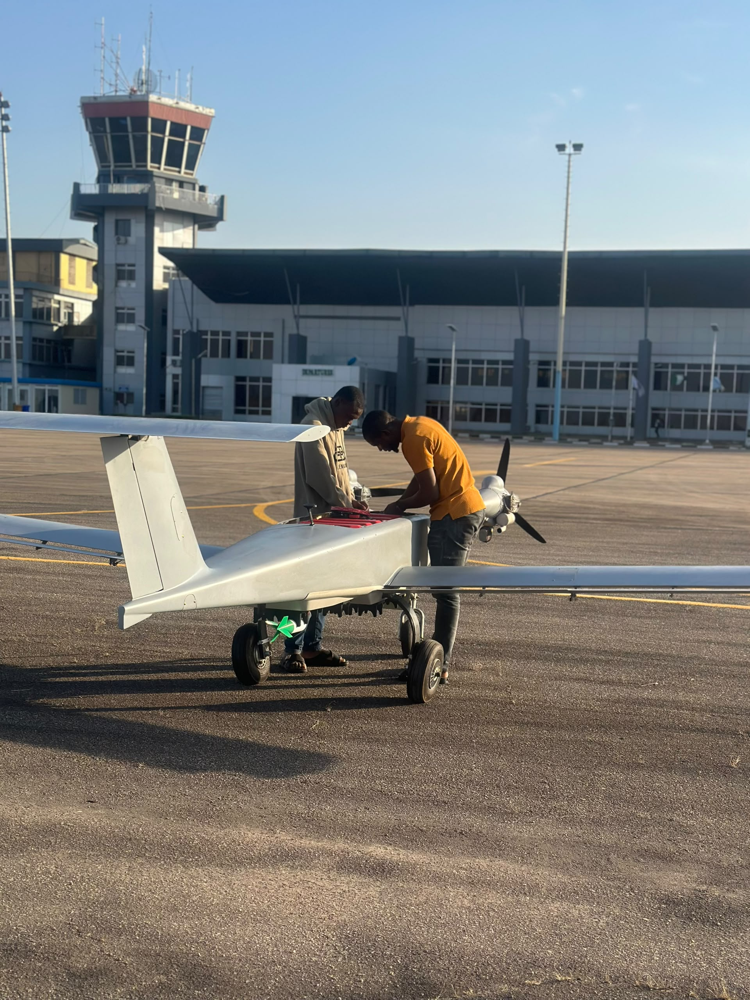
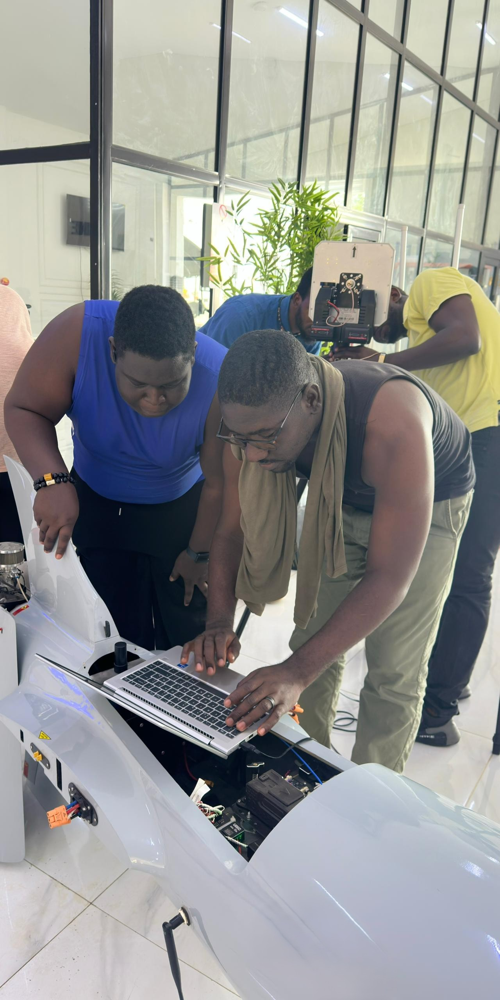
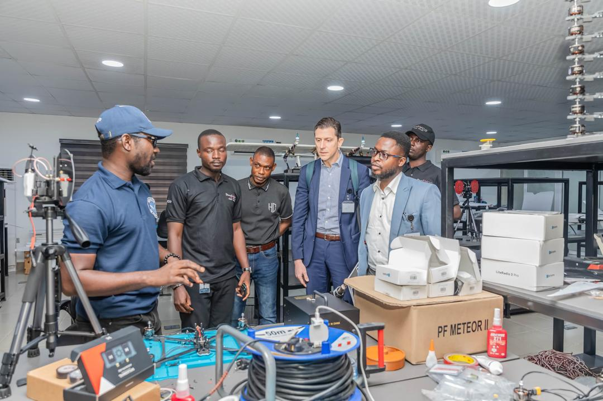
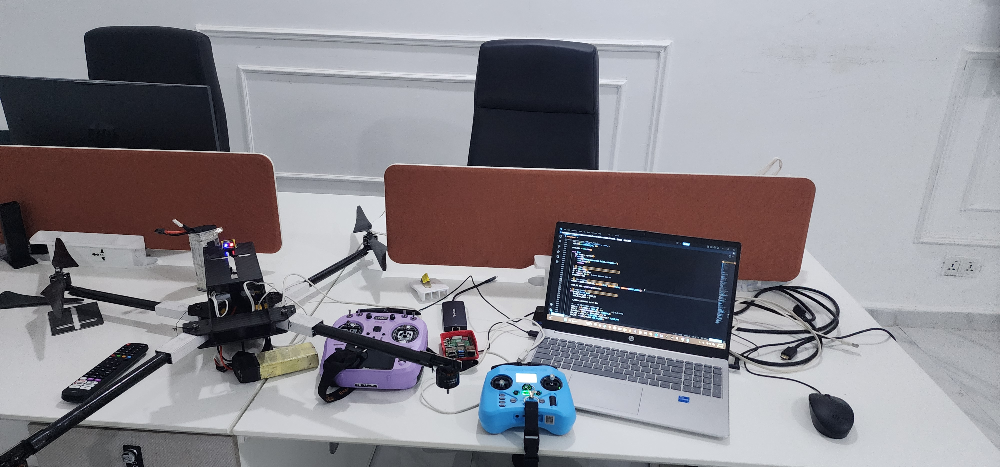
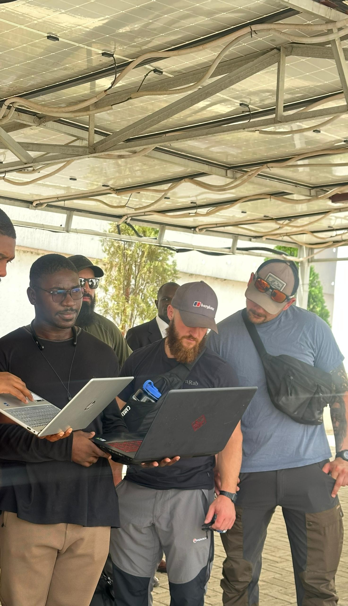
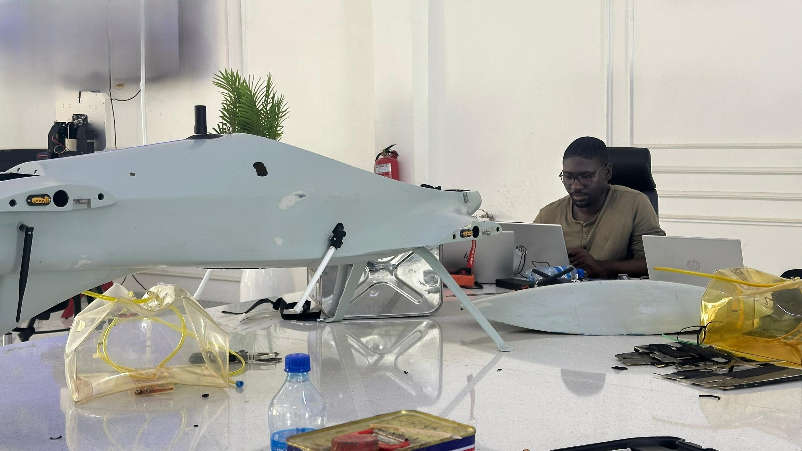

Autonomy & Intelligence Thrusts
- ▸ Neural MPC & Deep RL Control Policies — NNPC and RL policies running inside the flight loop for trajectory synthesis and aerodynamic adaptation.
- ▸ Onboard Edge NNs — real-time object detection (YOLO), visual tracking (DeepSORT), and VIO state estimation for GPS-denied flight.
- ▸ Decentralized Swarm Autonomy — ROS 2 multi-UAV coordination with state consensus and inter-agent negotiation.
- ▸ Security — AEAD telemetry encryption and secure memory wiping in flight firmware.
Background
- Software & Autonomy Engineer — Briech UAS, Abuja, Nigeria 2025
- Software & Autonomy Engineer — ProForce Air Systems Limited 2024–2025
- Engineer — Ministry of Aviation & Aerospace Development, Abuja, Nigeria 2024
- Research Engineer, Autopilots — Air Force Research & Development Centre, Kaduna, Nigeria 2022–2023
- B.Eng. Aerospace Engineering — Air Force Institute of Technology, Kaduna, Nigeria 2018–2023
Some projects & Research Work
Onboard Detection & Real-Time Tracking Engine
Edge computer vision pipeline for target tracking and autonomous interception. Operates real-time object detection models (YOLO) coupled with continuous SORT Kalman tracking to stream 3D spatial velocity vectors into the vehicle position control loops without offboard computing. Validated in SITL and deployed on hardware.
Firmware-Embedded VTOL Nonlinear MPC & Solver
Led a team in the development of a Real-time C++ control module (vtol_nmpc_control) directly inside PX4 firmware. Replaces static gains with acados solvers and data-driven dynamic identification (SINDy) to optimize complex multi-rotor transition trajectories on flight hardware.
class VtolNmpcControl : public ModuleBase<VtolNmpcControl>, public px4::ScheduledWorkItem
{
private:
void Run() override;
quadplane_nmpc_solver_capsule *_capsule{nullptr};
uORB::Subscription _local_pos_sub{ORB_ID(vehicle_local_position)};
uORB::Subscription _attitude_sub{ORB_ID(vehicle_attitude)};
uORB::Publication<actuator_motors_s> _actuator_motors_pub{ORB_ID(actuator_motors)};
};Cryptographic Telemetry Layer
Led a team in building a Zero-trust AEAD encryption (MavlinkCrypt) embedded into firmware telemetry links, with automated memory zeroing (crypto_wipe) on session teardown.
MavlinkCrypt::~MavlinkCrypt()
{
// SAFE WIPING OF ALL ENCRYPTION KEYS FROM RAM UPON TEARDOWN
crypto_wipe(_secret_key, 32);
crypto_wipe(_public_key, 32);
crypto_wipe(_shared_key, 32);
crypto_wipe(_session_key, 32);
}Gallery





